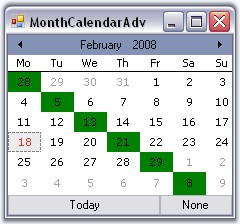
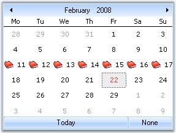
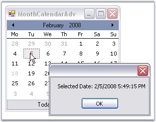

This section illustrates the solutions for various task-based queries about the control.
This can be done by calling ClearSelection() method.
|
[C#]
this.monthCalendarAdv1.ClearSelection(); |
|
[VB.NET]
Me.monthCalendarAdv1.ClearSelection() |
The appearance of diagonal columns can be customized using the below code.
|
[C#]
private void monthCalendarAdv1_DateCellQueryInfo(object sender,Syncfusion.Windows.Forms.Tools.DateCellQueryInfoEventArgs e) { if(e.RowIndex==e.ColIndex) { // Creates an instance of GridStyleInfo. Syncfusion.Windows.Forms.Grid.GridStyleInfo gsi=e.Style;
// Changes backcolor. gsi.BackColor=Color.Green;
monthCalendarAdv1.SetInfo(e.RowIndex,e.ColIndex,gsi); } } |
|
[VB.NET]
Private Sub monthCalendarAdv1_DateCellQueryInfo(ByVal sender As Object, ByVal e As Syncfusion.Windows.Forms.Tools.DateCellQueryInfoEventArgs)
' Creates an instance of GridStyleInfo. If e.RowIndex = e.ColIndex Then Dim gsi As Syncfusion.Windows.Forms.Grid.GridStyleInfo = e.Style
' Changes backcolor. gsi.BackColor = Color.Green
monthCalendarAdv1.SetInfo(e.RowIndex, e.ColIndex, gsi) End If
End Sub |

Figure 245: Diagonal Columns BackColor = "Green"
Setting Icons for the Data Cells
Using DateCellQueryInfo event, we can add icons to the data cells.
|
[C#]
private void monthCalendarAdv1_DateCellQueryInfo(object sender,Syncfusion.Windows.Forms.Tools.DateCellQueryInfoEventArgs e) { if(e.RowIndex==3) { e.Style.ImageList = this.imageList1; e.Style.ImageIndex = 1;
} } |
|
[VB.NET]
Private Sub monthCalendarAdv1_DateCellQueryInfo(ByVal sender As Object, ByVal e As Syncfusion.Windows.Forms.Tools.DateCellQueryInfoEventArgs)
If e.RowIndex==3 Then
e.Style.ImageList = this.imageList1; e.Style.ImageIndex = 1;
End If
End Sub |

Figure 246: Icons set for the Third Row
The MonthCalendarAdv gives an array of selected dates. So if u want to get only one date choose the first element from that array. Also set AllowMultipleSelection property to false. The DateSelected Event is fired after the user had completed the selection.
|
[C#]
private void monthCalendarAdv1_DateSelected(object sender,EventArgs e) { // DateSelected event is fired and selected dates will be displayed. MessageBox.Show("Selected Date: " + monthCalendarAdv1.SelectedDates[0].ToString()); } |
|
[VB.NET]
Private Sub monthCalendarAdv1_DateSelected(ByVal sender As Object, ByVal e As EventArgs)
' DateSelected event is fired and selected dates will be displayed. MessageBox.Show("Selected Date: " + monthCalendarAdv1.SelectedDates[0].ToString()) End Sub |

Figure 247: MessageBox displaying the selected date at Run Time
Yes, we can restrict the dates that are selected. If you want to allow the user to select only Mondays on the calendar, you can set Clickable property to false for other days except Monday using DateCellQueryInfo event handler.
The following code snippet can be used for this.
|
[C#]
void monthCalendarAdv1_DateCellQueryInfo(object sender, DateCellQueryInfoEventArgs e) { // if not Monday if (e.ColIndex != 2) { e.Style.Clickable = false; e.Style.Enabled = false; } } |
|
[VB.NET]
Private Sub monthCalendarAdv1_DateCellQueryInfo(ByVal sender As Object, ByVal e As DateCellQueryInfoEventArgs) ' if not Monday If e.ColIndex <> 2 Then e.Style.Clickable = False e.Style.Enabled = False End If End Sub |
To change the days displayed in the calendar, you need to handle the PrepareViewStyleInfo event of the Grid control, which is embedded in the MonthCalendarAdv control and change its cell value as follows.
|
[C#]
private void Form1_Load(object sender, EventArgs e) { foreach (Control ctl in this.monthCalendarAdv1.Controls) { grid = ctl as GridControl; if (grid != null) { grid.PrepareViewStyleInfo += new GridPrepareViewStyleInfoEventHandler(grid_PrepareViewStyleInfo);
break; } } }
void grid_PrepareViewStyleInfo(object sender, GridPrepareViewStyleInfoEventArgs e) { if (e.Style.Text == "1") { e.Style.Text = "a"; } } |
|
[VB.NET]
Private Sub Form1_Load(ByVal sender As Object, ByVal e As EventArgs) For Each ctl As Control In Me.monthCalendarAdv1.Controls grid = CType(IIf(TypeOf ctl Is GridControl, ctl, Nothing), GridControl) If Not grid Is Nothing Then grid.PrepareViewStyleInfo += New GridPrepareViewStyleInfoEventHandler(grid_PrepareViewStyleInfo) Exit For End If Next ctl End Sub
Private Sub grid_PrepareViewStyleInfo(ByVal sender As Object, ByVal e As GridPrepareViewStyleInfoEventArgs) If e.Style.Text = "1" Then e.Style.Text = "a" End If End Sub |